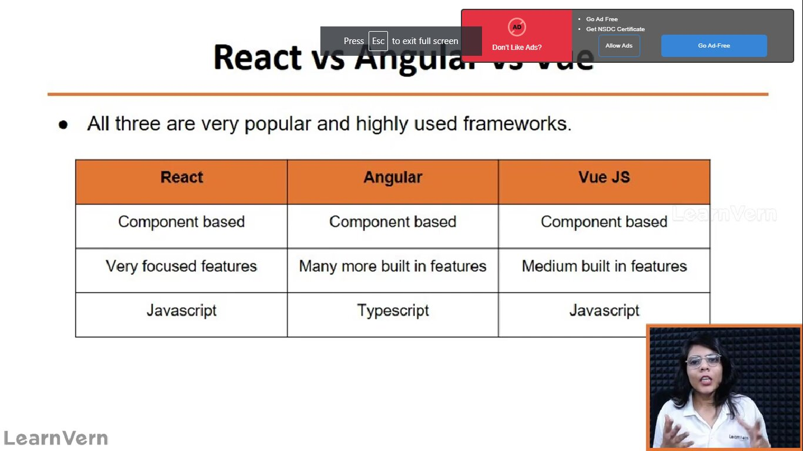

These are the difference between the react and the angular and the vue

Components
/what is react?
ans:-React is javascript library for building user interfaces.
it is used to built highely interactive,flexible,responsive web application.
4. what is document object model ?
Ans:- Document object model ,the significance of document object model it when we coded in the html
then it converted in to the tree format. this tree format contain the object ,all the element
converted in to the object.
Note:- React is used to built the single page application(SPA).
all the application is available in the the single page or content is available in the same
page ,content will change but the page will not change.
5. why do we use react?
Ans:- 1. javascript can help in developing the reactive web page application,but it is often found that
2. javascript needs a lot of code to do simple appliction as well.
3. creating element ,adding class and or styles appending to it the element.
4. Having to add eventlistener to the elements.
so with the help of the react we can do the
1. using react you can simple out this steps and can split in to multiple logic .
2. all the low level instructions are handled by react library itself.
3. you can define the reusable components.
6. what is the components?
Ans:- it is the combination of the html,css and javascript to make the reusable section of screen.
the club of components make the pages of web .
7. why components?
Ans:- Due to reusability of the code.
Due to single resposiblity.
8. what is the features of react?
Ans:- we know that the javascript ,html,css for building web applications.
but react is used to make this process simple code and simple structure.
9. Rules for creation of the custom components?
Ans:- 1. create file name subscription.js.
2. components are just functions with some simple syntax.so here we will define the functions.
3. to use the component we export the functions.
4. we will import on this in App.js and we will use the identifier in html code.
5. the custom tags should have upper case first letter and all the smaller case is treated as the default tags.
10. why do we install the Node js?
Ans:-1. there is a tool called create react app which can be used to create project and with default configuration
and setup.
2. this will create the development server which will you to run the application locally.
3. Node js is used to run the javascript without using the browser.
1. what will the npm start will do?
Ans:- 1. Npm start will transform and optimize the code in to something that browser can understand.
Question- how to make react through command promt
ans:- 1. firstly, go to any folder
2. After that,we open any folder and open the command prompt or git bash
3. fire the commandnpx create-react-app myapp(your app name)
4. Now your react app is created
_11zon.jpg)
_11zon.jpg)
_11zon.jpg)
Files structure
there are various files available when we create react app
it is a bydefault files available
all the dependcies of code avilable in node modules
if you want install npm files this is the way through command prompt
so this is the way you can do this shown in the image
_11zon.jpg)
_11zon.jpg)
_11zon.jpg)
understanding of index.js or index.html or app.js
- By default index.js is the first file we cannot change this file.
- the first file which is read by the react app is index.js
- index.htmlit will be presented on the public folder this is the file which runs on the browsers.
- We know that react is the single page application so html file cannot be changed.
- only body content will change in html
- it is accesible from outside so it is available in the public.
- App.jsis the imported component in index.js(App />)
- if we want to use imported components in index.jsthen in the component file export default App;and in the index.js fileimport App from './App';
- Now all the imported components is converted in to javascript in index.js file either it is imported component css or imported components js file
.png)
.png)
.png)
.png)
.png)
.png)
.png)
.png)
.png)
.png)
.png)
.png)
.png)
.png)
.png)
.png)
.png)
.png)
.png)
.png)
.png)
.png)
In index.js file the there is also imported as react dom which takes all the library of javascipt, after that we can react render it.
.png)
.png)
Introduction of JSX
.png)
.png)
.png)
- we use in any js file html code due the reason that react use jsx
- The full form is Jsx is:-javascript xml
- so we write the code in the jsx ,and this code is transfered in to the pure javascript and html and pure css code
.png)
.png)
.png)
.png)
.png)